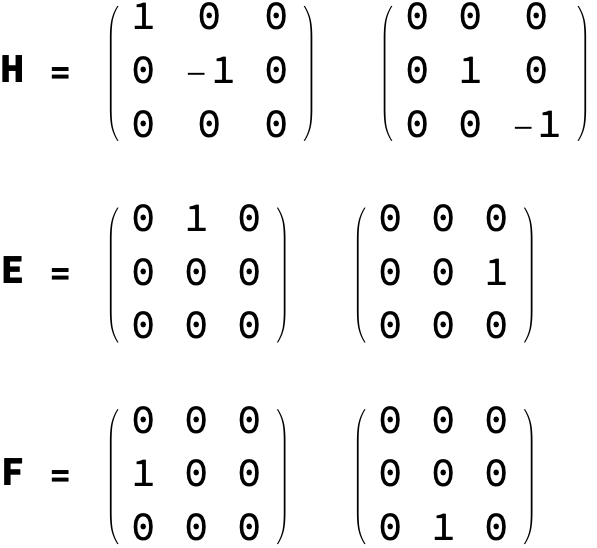

Concepts¶
This page defines the vocabulary the rest of the documentation uses — simple Lie
algebras, roots and weights, Dynkin labels, the three generator bases, the
highest-weight construction, and Young tableaux. It is deliberately
type-agnostic: the guided tour works everything out in
detail for SU(3), while this page gives the concepts for su, so, and sp
alike, and points at the function that computes each one.
If you just want to see the package in action, jump to the tutorials; if you know the vocabulary already, the API reference has every symbol.
Simple Lie algebras and the ABCD classification¶
A Lie algebra is simple if it is non-abelian and has no nonzero proper ideal. Every finite-dimensional simple complex Lie algebra is one of four infinite families — \(A_n\), \(B_n\), \(C_n\), \(D_n\) — or one of five exceptional algebras (\(G_2\), \(F_4\), \(E_6\), \(E_7\), \(E_8\)). This package covers the four classical families, which are the complexified Lie algebras of the classical matrix groups:
Family |
Algebra |
Group |
Build it with |
|---|---|---|---|
\(A_{n-1}\) |
\(\mathfrak{su}(n)\) |
\(\mathrm{SU}(n)\) |
|
\(B_n\) |
\(\mathfrak{so}(2n+1)\) |
\(\mathrm{SO}(2n+1)\) |
|
\(C_n\) |
\(\mathfrak{sp}(2n)\) |
\(\mathrm{USp}(2n)\) |
|
\(D_n\) |
\(\mathfrak{so}(2n)\) |
\(\mathrm{SO}(2n)\) |
|
The constructors SU, SO, and Sp are shorthands that normalize to a canonical
LieAlgebra[type, rank], so SU[3] and LieAlgebra["A", 2] are the same object.
→ Reference: LieAlgebra ·
SU · SO ·
Sp
The Cartan subalgebra, roots, and the root system¶
Inside the algebra sits a maximal commuting set of generators, the Cartan subalgebra; its dimension is the rank of the algebra. The remaining generators are simultaneous eigenvectors of the Cartan subalgebra, and their eigenvalue vectors are the roots. A choice of which roots are “positive” singles out a set of simple roots — a basis from which every positive root is a non-negative integer combination.
The Cartan matrix records the geometry of the simple roots, \(A_{ij} = 2(\alpha_i,\alpha_j)/(\alpha_j,\alpha_j)\), and encodes the whole algebra up to isomorphism.
→ Reference: Rank ·
SimpleRoots ·
PositiveRoots ·
CartanMatrix ·
LieAlgebraDimension
Weights, Dynkin labels, and fundamental weights¶
A representation assigns to each state a weight — the vector of its Cartan
eigenvalues, i.e. its “magnetic quantum numbers.” Weights are most naturally
written in the basis dual to the simple roots: the coordinates are the Dynkin
labels, a list of Rank[g] integers. The basis vectors of that dual basis are
the fundamental weights.
A weight may be shared by several independent states; that count is its multiplicity, and the collection of all weights with multiplicities is the weight system.
→ Reference: FundamentalWeights ·
WeightSystem
The three generator bases¶
The same algebra can be presented in three bases, each suited to a different job:
Defining representation —
Generators[g]returns the algebra acting on its smallest faithful representation (forsu(n), the \(n\times n\) traceless anti-Hermitian matrices; thesu(3)case gives the normalized Gell-Mann matrices \(T_a=\lambda_a/2\)).Cartan–Weyl —
CartanWeyl[g]splits the generators into the diagonal Cartan generators and the raising/lowering operators that move between weights.Chevalley —
Chevalley[g]is the basis the representation engine uses: one \(H_i\), \(E_i\), \(F_i\) per simple root, with integer structure constants.
CartanWeyl and Chevalley return an association keyed by "Cartan",
"Raising", "Lowering". For so/sp the invariant form can be realized in two
ways, and BasisTransform[g] is the matrix relating them.

→ Reference: Generators ·
CartanWeyl ·
Chevalley ·
BasisTransform. See it worked out in the
guided tour.
Highest weights, dimension, and the Casimir¶
An irreducible representation is determined by a single highest weight \(\lambda\)
(non-negative Dynkin labels). Irrep[g, w] is the inert label for that irrep; the
data functions compute from it:
RepresentationDimension— the dimension, in closed form from the Weyl dimension formula (no enumeration of states).WeightSystem— the full weight system, from the Freudenthal multiplicity recursion.CasimirEigenvalue— the eigenvalue of the quadratic Casimir operator, \((\lambda, \lambda + 2\rho)\).RepresentationMatrices— the explicit \(H_i, E_i, F_i\) matrices in the irrep, built by the abstract highest-weight (Shapovalov) construction in an orthonormal basis with \(E_i = F_i^\dagger\) and \(H_i\) diagonal.
Because the construction is abstract, it reaches every irrep — including the
so/sp spinors that do not appear in any tensor power of the defining
representation.
→ Reference: Irrep ·
RepresentationDimension ·
CasimirEigenvalue ·
RepresentationMatrices.
Worked examples: Representations tutorial.
Young tableaux for su(n)¶
For su(n), an irrep corresponds to a Young diagram. A diagram with row
lengths \([\mu_1, \mu_2, \dots]\) carries the irrep whose Dynkin labels are the
successive row-length differences \((\mu_1 - \mu_2,\ \mu_2 - \mu_3,\ \dots)\). The
states of the irrep are the standard tableaux, read as symmetrized many-body
wavefunctions: each column is antisymmetric (so a repeated entry in a column makes
the state vanish), each row symmetric.
The toolkit builds these states, applies the Young symmetrizer, takes inner products, normalizes, and orthogonalizes a degenerate weight space — the same Gram–Schmidt step you do in quantum mechanics.
→ Reference: Tableau ·
TensorTableau ·
TableauOrthogonalization.
Worked end to end in the guided tour and the
Young-tableaux tutorial.
Conventions¶
A few conventions are worth pinning down before you compare results against a textbook or another package. They are listed in full on the reference overview; the ones that most often trip people up:
Note
Conventions that differ between sources
Dynkin-label ordering follows the Bourbaki labelling of the Dynkin diagram. For \(B_n=\mathfrak{so}(2n{+}1)\) the short simple root is the last node, so the spinor is
{0, …, 0, 1}; for \(C_n=\mathfrak{sp}(2n)\) the long root is the last node; for \(D_n\) the two half-spinor nodes are the last two.Cartan-matrix convention.
CartanMatrix[g]returns \(A_{ij} = 2(\alpha_i,\alpha_j)/(\alpha_j,\alpha_j)\), equivalently \([H_i, E_j] = A_{ji}\,E_j\). For the non-simply-laced types (\(B\), \(C\)) this is the transpose of the matrix some references (e.g. LieART) print — for exampleCartanMatrix[SO[5]]is{{2, -2}, {-1, 2}}. The package is internally consistent in this convention.Casimir normalization is the mathematicians’ one (long roots have squared length 2), so the
su(2)spin-½ value is \(3/2\), twice the physics value \(3/4\).Everything is computed in exact arithmetic over \(\mathbb{Q}\); radicals enter only in the final orthonormal rescaling of representation matrices.
Going deeper¶
For the underlying theory, standard references are Humphreys, Introduction to Lie Algebras and Representation Theory; Fulton & Harris, Representation Theory: A First Course; and, for the physics conventions, Georgi, Lie Algebras in Particle Physics.